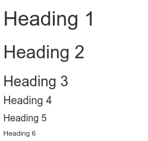

<w:p>
<w:pPr>
<w:pStyle w:val="Heading2"/>
</w:pPr>
<w:r>
<w:t>My Section Title</w:t>
</w:r>
</w:p>Reporting in R Markdown
Introduction
In the previous labs you were exploring the 2012 Northern Ireland Life and Times Survey (NILT). You’ve learnt how to download, read and format the data. Also, you’ve learnt how to explore categorical and numeric data and a mix of them.
Across the labs we have also been using R Markdown, incrementally introducing aspects of it each week. In this lab, we will consolidate what we have covered and learn about how to efficiently report quantitative results. R Markdown is used by many academics and professionals in a workplace setting to communicate quantitative findings to a wider audience. R Markdown is also what you will use to write your research report assignment for this course - where we are keeping this week’s lab relatively short so you have time to setup and apply what we have covered to your formative assessment. Let’s dive in and learn more!
R Markdown
To briefly summarise what covered so far - R Markdown allows you to combine your narrative and data analysis in one document, writing plain-text documents with code chunks that can be converted to multiple file formats, such as HTML or PDF. This makes R Markdown documents reproducible by embedding the analysis directly into the document. Compared to doing your analysis separately, copying and pasting over your results and graphs to a Word document, it also reduces the risk of error when working on and updating your analysis.
R Markdown achieves this by combining the power of R, Markdown, and Pandoc. Markdown is a lightweight markup language with simple, human-readable syntax for formatting text. Pandoc is a tool for converting files from one format to another, such as Markdown to PDF or HTML. R Markdown builds on these tools. When you ‘knit’ a document, the code chunks are executed to run your analysis and generate your tables and graphs using R. The output from these are then integrated with the Markdown text is passed to Pandoc to convert into a neat and consistently formatted HTML, PDF, or other specified file format.
R Markdown then demonstrates another wonderful aspect of free and open source software - bringing together a combination of existing software into more powerful tools. It may look ugly at first, especially as most software follows the “What You See is What You Get” (aka WYSIWYG) principle, such as Microsoft Word. Indeed, it can seem odd needing to use #s in Markdown at the start of lines to create headers, and the text not looking the same as when you knit it. The use of # and other syntax in Markdown is what is known as ‘markup’, using code to specify the structure and formatting. Markdown is a play on the term ‘markup’ as compared to many alternatives, it is lightweight and human-readable.
It is easier to explain what is meant by lightweight and human-readable if we compare it to Microsoft Word documents. Whilst using Word you may have WYSIWYG, behind the scenes Word is recording all text in a markup language. More specifically, it uses XML, which has a system of tags, e.g. <tag> to start section formatted in specific way and </tag> to mark where that formatting ends. In Markdown we can simply write ## My Section Title to add a 2nd level header with the text “My Section Title”. Within the XML for Word documents this would instead be:
Whilst it can be beneficial then that Word handles all this for you, it can also result in a series of problems. Different versions of Word can display the same document differently. I have collaborated on lengthy documents with colleagues where on one person’s screen a new section begins on page 32 and on someone else’s page 33. When you copy and paste text from elsewhere you need to ensure you “paste without source formatting” to avoid the formatting from other documents being used in your current document. You have likely also experienced the horror when working in large documents of adding an image and all the formatting going awry. With complex formatting, the document can also develop unfixable issues, as issues within the underlying XML accummulate that Word itself is unable to fix and the user is unable to directly edit.
New R Markdown Document
For this lab, we will continue working in the same project called NILT in Posit Cloud.
- Please go to your ‘Quants lab group’ in Posit Cloud (log in if necessary);
- Open your own copy of the ‘NILT’ project from the ‘Lab Group ##’;
Note, if you received an error last week when trying to run the code to load the NILT dataset, the most likely cause was that you created your R Markdown file in a subfolder, rather than the top-level project folder. Please see the final section below for how to check if this was the problem and how to fix it.
- Create a new Rmd file, from the ‘File’ tab on the top-left: `File>New File>R Markdown…’
- RStudio may display a yellow banner at the top of your file, asking to install some packages, click ‘Yes’. (Don’t worry if this doesn’t show, if followed the instructions last week you will likely not see a yellow banner when creating a new file this week.)
- Type ‘R Markdown Test’ in the ‘Title’ section, your name in the ‘Author’ box, and tick the checkbox for ‘Use current date when rendering document’. Leave the ‘Default Output Format’ as
HTML. Then, click ‘OK’. - Save the Rmd file clicking on
File>Save as..., typeRMarkdownin the ‘File name’ box, and click on the Save button.
After completing the previous steps, your screen should look like this:
Note that you can have multiple files open in the Sources pane (top-left) at the same time. These will appear as a series of tabs along the top of the Sources pane. If what you were working on suddenly changes, make sure you haven’t accidentally switched tabs to another file.
YAML Header
Compared to how we created RMarkdown files in previous weeks, when creating a new R Markdown file via the File menu, it creates one that includes some example content by default.
Rmd document RMarkdown contains an example by default. The first bit on the top enclosed by the dashes ---, you should be used to by now and contains the general metadata to format the output. This bit is called YAML. In the default example, it contains the title, name of the author, date, and the type of output (html).
We can do a lot with this YAML header. Let’s specify some more options. Under the line for title add a new line and add:
subtitle: "This is a test"Next modify the “output” line by firstly on the output: line placing your cursor at the start of html_document and hit enter. This will place html_document on a new line with a tab / 2-space indent at the start. Next add : at the end of html_document, so you have html_document:, and hit enter again. This will start a new line with a double tab / 4-space indent at the start. Add the following lines:
toc: true
toc_float: true
theme: cosmoYour YAML header should now look at follows:
subtitle is self-explanatory. What we have done by placing html_document on a new line with : at the end and nested list of further key-value pairs underneath, is we have specified some options for how we want our knitted HTML document to look. toc stands for “table of content”, toc_float places the table of contents on left-hand side of the document rather than at the top, and theme changes the default HTML template used to the “cosmo” theme instead.
To render the document from Rmd to HTML, we need to Knit it by clicking on the icon shown below. Try it!

If this is your first time knitting in your NILT project, RStudio may ask you if you want to update some packages, click ‘Yes’.
After you knit the document, a window with the output will pop up automatically. As you can see, this document contains the main title and subtitle, followed by your name and the current date, as specified in the YAML. A table of contents appears on the left, showing the headers used in the document, with the header for the section currently in view on the screen highlighted in blue (notice how it will change if you scroll up/down the HTML file).
You may notice that compared to previous R Markdown files we have knitted, the style of this one may look familiar…
This is because the “cosmo” theme is the same one that this lab workbook itself uses as its base theme. This is another powerful aspect of using R Markdown. Your document itself remains fairly simple, but with a few simple options you can quickly customise its look and add features like a table of content. There is a lot more options you can use with HTML documents and range of themes can choose from. As you build your coding skills, you can also write additional custom scripts to further style your documents and add even more features. Importantly, despite the increasing customisation and complexity, the R Markdown files with your narrative and code remain simple and will knit to consistently and neatly formatted HTML files.
R Markdown Syntax
Back to the R Markdown file. After the YAML header, there is a second-level header which includes the first section of this example document. Also, the word ‘Knit’ is shown in bold, as it was wrapped by double asterisk **. You can also wrap text by a single asterisk * to make it italics.
These are further examples of R Markdown’s simple, human-readable syntax for formatting text. Whilst different to what you will be used to using WYSIWYG apps, it is easy to learn. This simple transparent syntax makes it simple and quick to format our text, and avoids all the potential issues arising from hiding the syntax from users, as happens with Word document.
Below is a screenshot from RStudio with text using the key basic syntax for formatting your main text:

And, this is how it appears when knitted:

As seen already, headings are set using the pound / hash sign, #, at the start of a line, with the number of hashes determining the header level:

And, how it appears when knitted:

Line spacing
The main thing in R Markdown’s syntax that often trips up new users is the need to ensure there are empty line spaces between:
- Each paragraph
- Before and after a list
- Before and after a header
Here’s some example text in an R Markdown document, the first without line spacing, the second with:

And, how this looks when knitted:

Side-note, this practice of using empty line spaces originates from traditional coding conventions. A common coding style includes placing a specified limit on the number of characters per line, with any overflow placed on a new line. To distinguish these lines breaks to keep a limit on the number of characters per line and those used to designate new paragraphs, lists, and headers, an empty line is used. Using empty lines also helps add visual clarity when writing in R Markdown.
Code Chunks Options
Included at the top of the example content in our R Markdown file is a code chunk named “setup”. Similar to how we have setup our R Markdown files in previous labs, this contains knitr::opts_chunk$set() code to set global default options for our code chunks. By global, what we mean is that the options set here will apply to all of our code chunks unless we set individual options for any of them.
For example, if we scroll down to the code chunk named “pressure”, you will see it has “echo=FALSE”.
This overrides the global default that was set - echo=TRUE - which tells R when knitting to include the code chunk in the knitted output. So, by setting echo=FALSE for this code chunk, it will not display in our knitted file. If you look at your knitted file, you will see that whilst the summary(cars) code is included, plot(pressure) is not.

Some key options that you can set for code chunks - either globally in the “setup” code chunk or on a per code chunk basis - are:
- echo - whether the code chunk is shown in knitted files.
- include - whether the code chunk and its output - such as tables and graphs - are displayed in knitted files.
- message and warning - whether messages and warnings raised when running code are displayed in knitted files.
- eval - whether the code is run or not.
As noted at the second in-person lecture, setting eval=FALSE is useful if wanting to include example code or code that would result in an error message. This makes it incredibly useful when writing your own notes as - for example - you can keep a record of code that resulted in an error message followed by another code chunk that has the working code.
Importantly, whilst across the labs we have setup our R Markdown files to show the code from our code chunks in our knitted files, we do this so the files and their knitted outputs are useful reference material. When writing academic articles and research reports for public audience, we usually do not want to include our code. As you will see, because of that, the R Markdown files in the project templates for the formative and summative assessments already includes echo=FALSE as a global option in the setup code chunk. That saves you from then needing to manually add echo=FALSE to any additional code chunks you create. If you want to create code chunks to run code in your R Markdown file, but don’t want either the code or its output included in your knitted file, you can add include=FALSE in the code chunk options.
Exporting HTML Files
When you knitted the document, RStudio actually created a new .html file with the same name as your R Markdown document. You can confirm this by looking in the ‘Files’ tab in bottom-right.
For the formative and summative assessments, you will need to export your HTML file rather than saving it via your browser. Whilst HTML files saved from the browser and exported from RStudio will look absolutely identical when opened, some browsers - and browser extensions - will add additional code within the HTML file. This additional code does not change how the file looks when opened, but the code in the file creates issues for Turnitin.
To export your knitted HTML file then -
- Check the box next to the knitted HTML file you want to export in the ‘Files’ panel. By default, the Files panel is on the bottom right of the screen.
- Click ‘More’ from the toolbar at the top of the Files panel.

- Click ‘Export’ from the menu options that pop-up.
- This will pop open an ‘Export Files’ dialogue. Here, for the assessments, you can rename the file to include your student number. Just make sure the “.html” at the end remains included.

- After naming the file, click ‘Download’. This should open a dialogue to select which location to save the file. (If not see the ‘Important’ note below.)

Here’s a short gif running through all the steps together.

Important: Some browsers by default will download to a ‘Downloads’ folder and instantly open the file within the browser after its finished downloading. This will open your knitted file in a tab within your browser. Do not then ‘Save as…’ the file from within the browser. Instead, close the tab and use your file explorer to navigate to your ‘Downloads’ folder to find the exported copy of your file to submit.
Activity
In the RMarkdown.Rmd file that you just created, do the following:
- Change the title of the document in the YAML to ‘Lab 5 - R Markdown Test’.
- In the code chunk called ‘pressure’, change
echo=FALSEtoecho=TRUE. - Add/modify the
html_document:options and theme. (Themes you can use: bootstrap, cerulean, cosmo, darkly, flatly, journal, lumen, paper, readable, sandstone, simplex, spacelab, united, and yeti.) - At the very bottom of the script, create a new paragraph and write one or two lines briefly describing how you think quantitative methods are improving your discipline (e.g. politics, sociology, social and public policy, or central and eastern European studies).
- Knit the document in
htmlformat. - Export the newly edited version of the
RMarkdown.htmldocument to your machine. - Discuss how each of the edits suggested above modify the output with your neighbour or your tutor.
Make sure you’ve got the basics of R Markdown, including exporting your knitted HTML files, since this what you will use to write your formative and summative assessments.
As a final activity for this lab, use the time remaining to create an RStudio project for the formative assessment and make a start.
If there is something not very clear, or you are curious about, feel free to ask your tutor. They will be happy to answer your questions.
Moving Files
For those who received an error message last week when trying to load the NILT dataset.
You can check whether you created a file last week in a sub-folder in the bottom-right ‘Files’ tab. You should see a folder path hierarchy such as “Cloud > project”. If this contains additional text, such as “> data” or “> R”, you are currently in a subfolder and any new file you create will be placed in it rather than the top-level project folder.
To move your R Markdown file created last week -
- Tick the checkbox next to it in the file list.
- Click ‘More’ in the toolbar at the top of the ‘Files’ tab.
- From the drop-down options select ‘Move…’
This will open a ‘Choose Folder’ dialogue -
- Click ‘project’ within the “cloud > project > data” folder hierachy.
- Click ‘Choose’ to confirm.
If you have the file open in a tab in the Source view, you will be asked if you wish to close the tab now that it is moved, click ‘Yes’.
You can then navigate back to the top-level folder by clicking ‘project’. Any new files you create will then be created in the top-level folder.